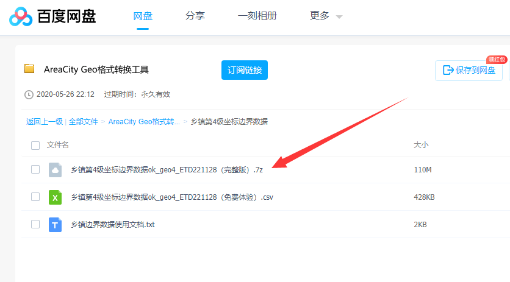
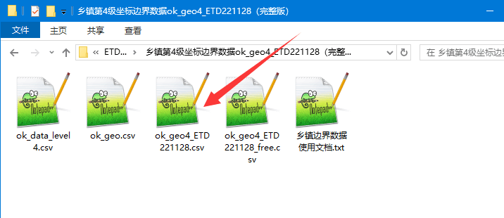
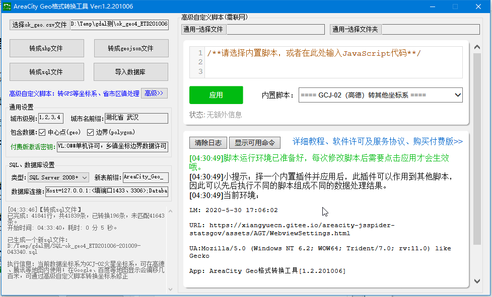

本数据为乡镇第4级的坐标边界数据，下载到的数据在购买数据密钥后可通过《AreaCity Geo格式转换工具》转成其他格式，比如：shp、geojson、sql，
或者直接导入数据库：SQL Server、MySQL。
下载的压缩包内已带有省市区前三级坐标边界免费开源数据，和省市区镇四级行政区划免费开源数据，这两个数据无需购买，直接下载使用，请点开上面的转换工具链接查看详细介绍。
本来想写“乡镇街道”几个字的，但有点太长，因此只写“乡镇”两个字；同理部分地方直接就省略成了“镇”一个字。
坐标边界范围在线测试预览：ECharts Map四级下钻在线测试和预览+代码生成 >>
整体数据预览：
点击图片查看大图(4000x3000)；图片中红色区域为此区域暂时缺失对应乡镇边界数据；图片中间部分和靠沿海地区乡镇密集区域中凸显的大块绿色代表此区域极有可能也缺失对应的乡镇边界数据，但已填充了一块和区县大小一致的数据作为乡镇级数据。
免费体验数据预览：
点击图片查看大图(1000x600)；免费提供广东深圳+中山、香港、澳门四个地区的第4级数据作为体验数据，可通过转换工具软件无限制导出。
- 本数据使用csv格式纯文本文件提供（ok_geo4_*.csv），一个文件内包含了全国所有乡镇级的矢量数据，此文件可以通过下文中的下载链接下载，并且提供了转换工具可以很方便的转换成
shp、geojson、sql
格式、或者导入
SQL Server、MySQL
数据库，转换工具支持坐标系转换；另外：省市区前三级的坐标边界数据是免费开源的（ok_geo.csv）、省市区镇四级行政区划数据也是免费开源的（ok_data_level4.csv），下载的压缩包内也有提供。
- 本数据的易用性很高，一次性即可获得全部数据；假如你是将数据用在echarts map中显示，使用本数据+转换工具可以大幅缩短你的开发时间：前端可以参考在 线预览中的源码 快速实现echarts map下钻至乡镇级；后端可以使用转换工具几分钟即可将数据导入到数据库，然后根据在线预览中的后端开发建议快速实现边界拉取接口。采用本数据预计半天开发工期即可实现一个echarts map多级下钻功能；如果采用别家的方案，可能拉取全部数据需要1天+，导入数据库要自己解析和编写sql又要1天+，然后前端对接处理转换geojson又需要摸索1天+，综合起来3天+时间；因此选订使用本数据将是一个明智的选择。
- 乡镇这级坐标边界数据免费数据源很难寻找，有些地区官方有提供，但整合很困难。
- 有第三方地图数据公司提供乡镇这级坐标和边界数据，比如：bigemap、rivermap、91weitu，一分钱一分货，均比较贵，并不清楚他们的数据完整性和准确性如何。
- 本数据的来源为：部分从第三方购买，部分从公开的数据源采集；出于商业目的，以上数据源更多信息恕不公开。
- 少量无数据源的区县使用此区县的整体范围作为唯一的一个四级子级（cid=301）。
- 少量有部分乡镇但不全的区县将留空产生空缺区域。
- 受限于数据源的准确度，会存在部分边界数据和真实地理位置存在大的偏差问题，由于乡镇数量过于庞大，全部校对异常困难，因此作者不对数据的准确性做担保。
- 作者已通过多个复杂校验规则和算法对数据进行了自动或人工校验和修正，因此边界图形数据的有效性是可靠的，均可正常转换成其他格式或导入数据库。
- 基于以上原因，所以本数据的价格相对很便宜，但不是免费。
- 所有乡镇边界数据，均可和同一压缩包内的 ok_data_level*.csv、ok_geo.csv 进行关联。
- 数据为 GCJ-02 坐标系（火星坐标），在高德、腾讯地图中可直接使用，在Google地图、百度地图中使用需先通过转换工具软件对坐标进行转换，支持转成 BD-09、WGS-84 GPS、CGCS2000，支持自行编写js脚本转换成其他更多的坐标系。
数据版本
以下表格中四级行政区划数据（ok_data_level4）、省市区三级坐标边界数据（ok_geo）的版本为GitHub上的当前最新版，ok_geo4乡镇数据压缩包内的三级数据版本可能会比GitHub上的版本更老，使用ok_geo4时，应当使用相同版本（就是在一个压缩包里）的ok_geo和ok_data_level4文件，否则可能会因为区划变更导致上下级区域不一致。
数据字段文档（ok_geo4_*.csv）
坐标和边界两个字段的类型在转换成了不同数据时，类型以相应的格式为准，比如在csv中就是string，在数据库中就是geometry，下表中以string格式来介绍。
| 数据字段 |
类型 |
描述 |
| pid |
int |
上级区县的ID，可以和 ok_data_level*.csv、ok_geo.csv 两个表中的id进行关联，注意需要同在一个压缩包内的数据才能稳定关联，否则可能因为区划调整导致关联不一致 |
| cid |
int |
序号id，在同一个上级中这是第几个乡镇（根据名称排序得到的编号），普通数据cid值<100；cid=301时（少量），代表此数据是使用区县填充的唯一的一个子级；cid>400 && cid<500时（少量），代表此数据是由数据源无法映射到 ok_data_level*.csv 中的上级区县时，通过区县边界来匹配到的一个上级，此种数据的准确性比cid<100的要低很多 |
| unique_id |
int |
唯一id，和省市区的id无关联，性质也完全不一样，可以当做是自定义编号来对待 |
| name |
string |
乡镇的完整名称 |
| ext_path |
string |
如：“广东省 深圳市 罗湖区 东湖街道”，为省市区镇四级完整名称，中间用空格分隔，所有数据均为此4级结构 |
| last_time |
string |
如：“2020-01”，这条数据的更新时间，为一个大概的值（不一定准确），仅用于参考 |
| centroid_geo |
string |
区域边界的几何中心坐标，GCJ-02火星坐标系。格式："lng lat" or "EMPTY"，EMPTY代表此乡镇没有边界信息（暂无此值的数据）；注意：几何中心相当于一个重心，会根据图形的不同而不同；甚至会受到弯曲程度的影响，导致中心不在边界范围内时，会将边界切分成小块取最优的一个中心 |
| polygon |
string |
区域边界，GCJ-02火星坐标系。格式："lng lat,...~lng lat,...;lng lat,..." or "EMPTY"，EMPTY代表此乡镇没有边界信息（暂无此值的数据）；存在多个地块(如飞地)时用;分隔，每个地块的坐标点用,分隔，如果某个地块中需要抠除一个小地块会存在~分隔符，特别要注意：多个地块组合在一起可能是MULTIPOLYGON或者POLYGON，需用工具进行计算和对数据进行验证 |
上面表格是乡镇坐标边界表（ok_geo4_*.csv）的字段文档，和省市区三级坐标边界表（ok_geo.csv）的字段不同，三级的字段文档请到 GitHub首页 查看文档对应的章节《【字段】ok_geo表》。
转换工具软件下载【必须】
付费版乡镇第四级坐标边界数据，需要通过《AreaCity Geo格式转换工具》来进行转换导出，[
QQ群内下载 ]、或
点此下载转换工具软件。
乡镇 坐标+边界范围
(ok_geo4_*.csv，90MB+压缩包 导出后300M+)：[
QQ群内下载 ]
、[
百度网盘下载 提取码: b6ct 进入到
AreaCity Geo格式转换工具/乡镇第4级坐标边界数据 目录内下载]
乡镇第4级坐标边界数据为付费数据，压缩包内提供了部分数据供免费体验，其他乡镇第4级坐标边界数据需付费购买 。
进入相应的下载目录后，请下载 乡镇第4级坐标边界数据ok_geo4_****（完整版）.7z 这个压缩包，里面包含了所有的数据。

解压后的目录内包含以下两个关键文件：
- ok_geo4_ETD*.csv: 为付费版乡镇坐标边界数据，为全国的第4级（乡镇这级）的完整数据（前3级省市区的在ok_geo文件内），需购买后用转换工具软件导出。
- ok_geo4_ETD*_free.csv: 为免费体验版乡镇坐标边界数据，包含了广东深圳+中山、香港、澳门四个地区的第4级数据，直接使用转换工具软件无限制导出。

提示：压缩包内已包含免费开源的省市区三级坐标边界数据（ok_geo.csv），和对应的省市区镇4级行政区划数据（ok_data_level4.csv），这两个文件的详细资料请到
GitHub首页 查阅；注意：压缩包内的三级数据版本可能会比GitHub上的版本更老，使用ok_geo4时，应当使用相同版本（就是在一个压缩包里）的ok_geo和ok_data_level4文件，否则可能会因为区划变更导致上下级区域不一致。
本教程以导入数据库为例，演示将压缩包内所有数据导入到 数据库；要转成 shp、geojson 的关键操作和导入数据库都一样，把不相干的步骤忽略了就行。
【一】下载转换工具软件和数据
通过上面数据下载得到 ok_geo4_ETD*.csv 等数据文件，和转换工具软件。
【二】打开转换工具软件进行设置
未购买数据密钥：
如果你没有购买数据密钥，只能导出免费体验数据；先点击 选择ok_geo.csv文件 按钮，选择 ok_geo4_ETD*_free.csv 文件。
已购买数据密钥：
如果你已购买数据密钥，就能导出和密钥匹配的省份乡镇数据或全部数据；先点击 选择ok_geo.csv文件 按钮，选择 ok_geo4_ETD*.csv 文件；在 付费版激活密钥 输入框中输入数据密钥。
导出指定城市的乡镇：
在城市名前缀输入框中可以通过输入指定的城市前缀来只导出某个城市下的所有乡镇，是通过对 ext_path 字段来进行前缀匹配查找，比如输入： 湖北 会导出所有湖北下的乡镇，输入 湖北省 武汉 会导出所有武汉市下的乡镇，输入 湖北省 武汉市 武昌 会导出所有武昌区下的乡镇街道。

【三】点击导入数据库
参考上面的转换工具使用教程文档，配置好数据库连接，然后就点击 导入数据库 按钮，耐心等待一会，ok_geo4_ETD*.csv 中的数据就导入到了数据库了。
注意：MySQL 5.* 中进行空间计算查询时，不带ST_打头的函数均为采用Polygon的外接矩形计算，会导致结果不准确，应当使用带ST_打头的方法来进行查询，
FAQ。
注意：MySQL的空间索引的创建要按
官方文档进行创建，否则很可能会索引失效，从而导致空间查询异常缓慢；或者切换成MyISAM引擎，会比InnoDB引擎的空间查询快很多。
【附】导入 ok_geo.csv 到数据库
现在，你已经将乡镇坐标边界数据导入到了数据库，但省的、市的、区县的坐标边界数据库中还没有，你可以将压缩包解压出来的 ok_geo.csv 导入数据库：
点击 选择ok_geo.csv文件 按钮，选择 ok_geo.csv 文件。
点击
导入数据库 按钮，耐心等待一会，
ok_geo.csv 中的省市区三级坐标边界就导入到了数据库了。
这里假设你已经获得了软件激活密钥，这样就能一次性将 ok_geo.csv 导入数据库；否则点击一次只能导入一个城市的数据。
【附】导入 ok_data_level*.csv 到数据库
现在，你差最后一个了，将省市区镇多级行政区划数据导入数据库，你可以将压缩包解压出来的 ok_data_level*.csv 导入数据库，ok_data_level3 是省市区三级行政区划数据，ok_data_level4 是省市区镇4级行政区划数据：
点击 高级按钮 按钮，点击右侧界面顶部 通用-选择文件 ，选择 ok_data_level*.csv 文件。
在右侧界面中选择内置脚本 [导入] ok_data_level*.csv省市区镇导入数据库 ，然后点击 应用 。
点击 ok_data_level*.csv省市区镇导入数据库 按钮，耐心等待一会，ok_data_level*.csv 中的省市区镇多级行政区划数据就导入到了数据库了。
数据升级：购买的数据不支持升级，当有新版本数据发布时，需另外购买，因此用户只能购买指定版本（最新版）的数据，老用户可享受折扣优惠（折扣以实际为准）。
省市区前三级：省市区前三级坐标边界数据的是免费开源的，无需购买，压缩包内ok_geo.csv这个文件，可以到开源库里面下载最新版，获得赠送的工具密钥后可以一次性导出全国的所有省市区3级数据。
四级行政区划数据：省市区镇四级行政区划数据是免费开源的，无需购买，压缩包内ok_data_level4.csv这个文件，可以到开源库里面下载最新版。
转换工具软件：乡镇数据（ok_geo4_*.csv）需要使用《
AreaCity Geo格式转换工具》进行转换导出，因此请在赠送的密钥有效期内完成数据的导出转换处理，把数据导出来后数据密钥的用处就不大了，
数据密钥过期后如果还需导出转换数据，需另外单独购买工具的激活密钥；
一般情况下购买数据后应第一时间将数据导出，以免产生密钥过期的问题（建议导出一份geojson或sql纯文本方便自己处理）；在密钥有效期内可以使用软件的所有功能，密钥仅限在购买时提供的指定的ID的电脑上使用。
如何购买：请先加客服QQ 1251654593，联系客服后付款，提供需要购买的省份城市、和打开转换工具软件后底下显示的ID信息，然后客服给你签发数据密钥，使用此密钥就可以导出对应的数据了。请勿通过其他途径购买，以免造成损失。
购买全部数据
价格：
¥1798 / 套
工具激活密钥：
赠送30天有效期
，请在30天内完成数据的导出转换
全部数据含31个省、直辖市、自治区的乡镇第四级坐标边界数据，含香港、澳门数据，暂无台湾数据。
按省单独购买
价格：
¥98 / 个省
工具激活密钥：
每个省赠送1天有效期（多个累加）
，请在有效期内完成数据的导出转换
比如：购买了“湖北”、“河南”两个省的乡镇坐标边界数据，会赠送2天的激活密钥，请在2天有效期内导出转换数据；导出的数据中只会包含“湖北”、“河南”两个省的乡镇坐标边界数据。
单独购买后，如需购买同版本的全部数据，只需补差价。
按市单独购买
价格：
¥29 / 个市
工具激活密钥：
每个市赠送4小时有效期（多个累加）
，请在有效期内完成数据的导出转换
比如：购买了“湖北武汉”、“河南郑州”两个市的乡镇坐标边界数据，会赠送8小时的激活密钥，请在8小时有效期内导出转换数据；导出的数据中只会包含“武汉”、“郑州”两个市的乡镇坐标边界数据。
北京、上海、天津、重庆只能按省购买，不支持按市购买（北京、上海、天津打7折）。
单独购买后，如需购买此城市同版本的上级省份、或全部数据，只需补差价。
按区县单独购买
价格：
¥10 / 个区县
工具激活密钥：
每个区县赠送1小时有效期（多个累加）
，请在有效期内完成数据的导出转换
比如：购买了“湖北武汉武昌区”、“河北唐山乐亭县”两个区县的乡镇坐标边界数据，会赠送2小时的激活密钥，请在2小时有效期内导出转换数据；导出的数据中只会包含“武昌区”、“乐亭县”两个区县的乡镇坐标边界数据。
单独购买后，如需购买此区县同版本的上级城市、省份、或全部数据，只需补差价。
同一用户一周内按区县单独购买累计次数不得超过5次，超过将不售（因为价格太低，难抵销售时间成本），购买多个时请尽量一起进行购买。
【活动】新年活动：
1. 新年购买数据享 7折 优惠，全部数据优惠价：¥1258 （原价：¥1798），按省单独购买优惠价：¥69 （原价：¥98），按市单独购买优惠价：¥20 （原价：¥29），活动截止：2022-03-15；
2. 于01月31日之前加入QQ群的用户购买数据享受折扣优惠 x 6折起，全部数据优惠价：¥1078，按省单独购买优惠价 ¥58，按市单独购买享受老价格 ¥15，活动截止：2022-03-31；
3. 已购买过数据的老用户，有更劲爆的折扣，欢迎联系客服获得优惠信息；
欢迎有数据需求的新老群组成员前来购买；活动期间有任何问题或建议欢迎和客服反馈。以上活动按区县单独购买均不参与。
为啥坐标、边界范围在非高德地图上绘制发生了偏移？
因为数据源ok_geo4_*.csv内的数据为GCJ-02坐标系（火星坐标），显示到Google地图、百度地图内有肉眼可见的偏移（几百米）；在不同坐标系下不能直接显示，需要先转坐标系，可通过高级自定义脚本转换坐标系修正。
加入QQ群：484560085，口令areacity，然后到群文件中下载。
购买数据能砍价吗？
已经很便宜了，数据整合、校验、修正很费功夫谢绝砍价，不过节假日、活动时也许可以打个折。
可以免费获得数据吗？
如果你是将本数据用于公益等领域，可以联系作者为你们组织提供免费许可。
您（以下称“用户”）下载、使用我（以下称“作者”）提供的软件、数据，应当阅读并遵守本许可协议。请用户务必审慎阅读、充分理解各条款内容，特别是免除或者限制责任的条款，并选择接受或不接受。除非用户已阅读并接受本协议所有条款，否则用户无权下载、安装或使用软件、数据及相关服务，用户的下载、安装、使用等行为即视为用户已阅读并同意本许可协议的约束。
1. 用户应当直接从作者许可的途径，如GitHub AreaCity-JsSpider-StatsGov仓库、此仓库文档中包含的地址中、此仓库QQ群中等途径中获取软件、数据包；其他途径获取到的软件包是未经过作者授权的，存在安全隐患，可能会导致你的系统、资产受到侵害，作者对因此给用户造成的损失不予负责。
2. 除法律法规有明确规定外，作者将尽最大努力确保提供的软件、数据及其所涉及的技术及信息安全、有效、准确、可靠，但受限于现有技术，用户理解作者不能对此进行担保。
3. 用户理解，对于不可抗力及第三方原因导致的您的直接或间接损失，作者无法承担责任。
4. 用户因使用作者提供的软件、数据进行处理、转换，和存储、转发、使用得到新数据，由此引起或与有关的包括但不限于利润损失、资料损失、业务中断的损害赔偿或其它商业损害赔偿或损失，需由用户自行承担。
5. 如若发生赔偿、退款等行为，赔偿、退款等累计金额不得超过用户实际支付给作者的总金额。
6. 用户不得使用作者提供的软件、数据从事违反法律法规政策、破坏公序良俗、损害公共利益的行为。
7. 用户不得对作者提供的软件、数据及其中的相关信息擅自出租、出借、销售、逆向工程、破解，不得在未取得作者授权的情况下借助本软件、数据发展与软件、数据有关联的衍生软件产品、服务、插件、外挂等。
8. 用户不得利用作者提供的软件、数据处理、传送、传播、储存侵害他人知识产权、商业秘密权等合法权利的内容，或从事欺诈、资金等违法犯罪活动。